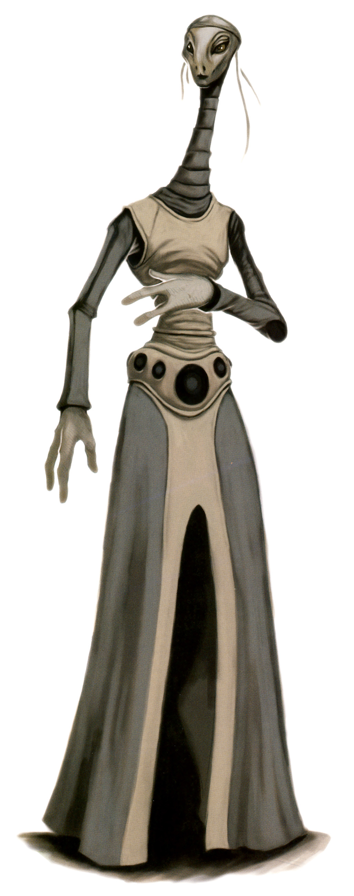

Kaminoan
kaminoan
Special Abilities: Kaminoans begin the game with one rank in Medicine. They still may not train Medicine above rank 2 during character creation. They also start the game with one rank of the Researcher talent .
Expressionless: Kaminoans add to all Charm checks they make. Other characters add to all social skill checks they make when targeting Kaminoans.
Secretive and unknown, Kaminoans launched themselves into galactic history—or infamy—by single-handedly creating the Grand Army of the Republic. While they have been ascending politically and financially, many Kaminoans feel their people have gone too far too soon by getting involved in galactic affairs.
The flooding of their planet ages ago led the Kaminoans to engineer a means of survival. They constructed spires and towers anchored to the ground—later, the sea floor. They created gene banks to preserve the land-based species. Finally, they turned to genetic manipulation not only to adapt their flora and fauna to this new environment, but to modify their own genetics to inhabit their altered world.
As isolationists, the Kaminoan political class invited only specific and wealthy offworld individuals to visit their homeworld for the purposes of trade. In exchange for the science and resources to maintain life on Kamino, they offered their biological and genetic artistry. One such service was cloning.
When Jedi Master Sifo-Dyas contacted Kamino with a bold proposal to produce a full army of clone soldiers, the Kaminoans debated the wisdom of such a project. Creating a whole army for the Galactic Republic would shine a spotlight onto the planet. Yet, the income would provide for their homeworld for generations to come and would secure the Kaminoans an influential seat in the Galactic Senate—on their own terms. In the end, the Kaminoans did what they have always done: adapt. And thus, the history of the galaxy changed forever.
Taller than the average human, Kaminoans tend to be slim, with a distinctive elongated neck and oblong head. Male Kaminoans are identifiable by the finlike crest atop their head. The species’ large, dark eyes with white pupils have the ability to pick out subtle variations in hue and even to see into the ultraviolet end of the spectrum. For this reason, Kaminoans favor white in their clothing and architecture, since “white” to them contains a multitude of hues.
Although it is a planned society, Kaminoan culture possesses a surprising amount of flexibility and uncertainty. Kaminoans genetically engineer and plan their offspring’s lives and futures. Their children enter society in the role assigned to them, taking an occupation based on their genetic “destiny.”
Yet, within this structured society is a great deal of variation. Some Kaminoans believe that their genetic destiny lies in engineering a perfect Kaminoan, and engage in lively debates on what that actually means. Others develop a certain fascination with genetic anomalies and what it means to “deviate” from a genetic plan. To the average Kaminoan, genetics, destiny, and the future are inseparable.
Kamino once had a temperate climate, with land, ice caps, oceans, and variable weather. At the end of an ice age and the loss of its ice caps, Kamino became an aquatic planet. The increase in thermal energy also caused the near-constant high winds and thunderstorms that span the planet to this day.
Scattered across the world, Kaminoan cities are anchored to the ocean floor, rising high above the surface so that the Kaminoans can harness power from the wind and collect fresh rainwater. Even power is generated by lightning strikes and stored in independent energy cores.
The location of Kamino was removed from astronavigation charts as part of the Kaminoans’ arrangement with Jedi Master Sifo-Dyas. Regardless of this acceptance of commerce with offworlders and their new seat in the Senate, the majority of Kaminoans still harbor strong isolationist tendencies. Now that they have influence in the Senate, the Kaminoans have ambitious plans to establish their own clone security force using the template from the Republic’s clone army, in order to ensure that they are able to maintain any level of isolation they choose.
Most Kaminoans speak Kaminoan and nothing else. Those who deal with offworlders learn Basic; in fact, they have been engineered and taught to interact with offworlders not only in Basic but in other languages as well. Those few who leave the homeworld—usually exceptional polyglots and polymaths—understand and appreciate the wide, confusing, and vital diversity of languages and cultures. In general, however, Kaminoans who speak Basic tend to use measured and formal words and phrases, careful not to reveal too much about their homeworld or themselves.
Kamino teeters on the edge of a cultural shift. While the Kaminoans’ decision to emerge from isolation was not made lightly, it still requires time to genetically engineer a generation better suited for open participation in the Galactic Republic. Those who have personally adapted to this new way of life travel out into the galaxy to learn more about their place in the wider scheme of things, but the majority of Kaminoans still act as if there were no wider galaxy in the first place.
t the time of their great flood, Kaminoans had not developed sophisticated space-travel technology, and the Galactic Republic had only just started their great expansion into the Slice. Kaminoans did the calculus and felt that the risk of being colonized as a result of petitioning for aid from the distant Republic, as well as the likely costs in resources and cultural change, were worse than the risks posed by modifying their planet and genetic code. Though the Kaminoans survived and continue to thrive, that decision has left them with a residual distrust toward offers of offworld help. Kaminoans do not necessarily view their species as superior, but they see other worlds as a distraction. Many believe that everything they need is on Kamino itself.